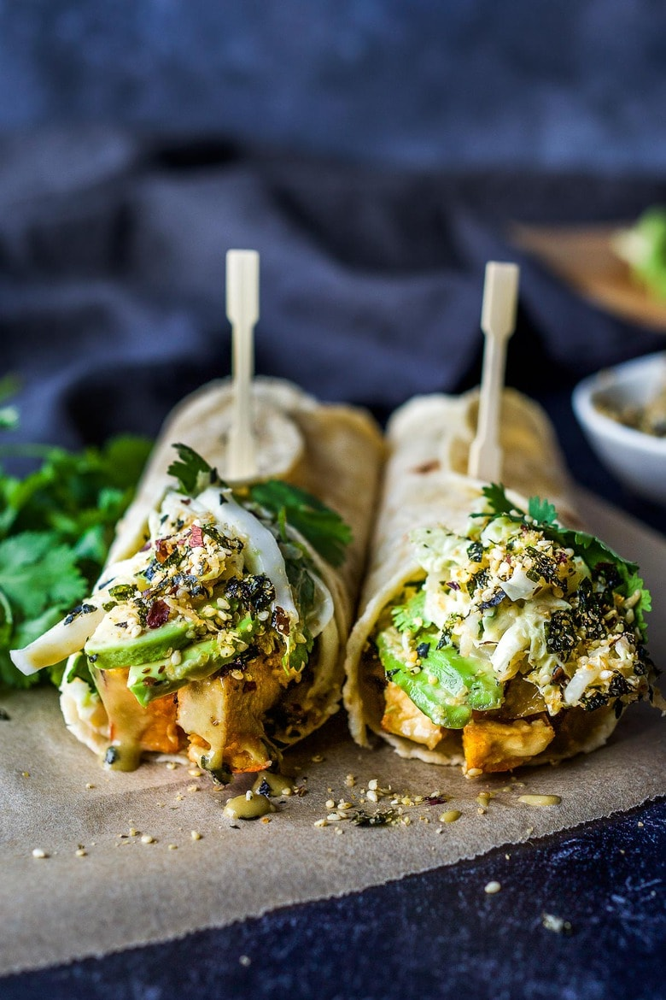

Miso Tofu Wrap with Winter Squash and Furikake

Description
A delicious vegan recipe for Miso Tofu Wrap with Roasted Winter Squash, Baked Miso Tofu, Asian Slaw, Avocado, Furikake and flavorful Miso Dressing.
Ingredients
- 1/4 cup toasted sesame oil
- 1/4 cup soy sauce
- 1/4 cup miso paste
- 2 tablespoon fresh ginger, grated
- 2 green onions, chopped, save out 1 tablespoon for slaw
- 3 tablespoons rice vinegar
- 3 tablespoons maple, sugar or honey
- 8 ounces tofu
- 1 pound winter squash, sliced into 1/2 inch thick strips (delicata, red kuri, butternut)
- 2-3 leaves of napa cabbage, about 1 1/2 cups after chopped
- 1/4 cup fresh cilantro
- handful of beansprouts -optional
- 1 avocado, sliced
- furikake
- 3 tablespoons vegan mayo (optional)
- 1/4 teaspoon wasabi paste (highly recommended!)
- tortillas (try cassava, rice or sprouted wheat)
Steps
- In a blender or with immersion blender whirl together soy sauce, toasted sesame oil, miso, ginger, rice vinegar and 2/3rds of the chopped green onions, and honey (or sugar or maple syrup) until smooth. A few small bumps are ok. Set aside 1/4 cup of sauce in a medium bowl.
- Cut tofu into one-inch-long strips and blot on a towel.
- Cut squash into one-inch strips and lay in a single layer on a baking tray along with the tofu strips. Brush or spoon miso dressing generously over the tofu and squash.
- Bake tofu and squash at 425 F in a preheated oven for 30 minutes.
- Combine 1/4 cup dressing with mayo and 1/4 teaspoon or more of wasabi paste. Toss sliced cabbage, scallions, cilantro and bean sprouts (if using).
- Assemble wrap: warm wrap if needed to make it pliable, spread dressing on the bottom, layer with squash, tofu, avocado, slaw, and top with lots of furikake!